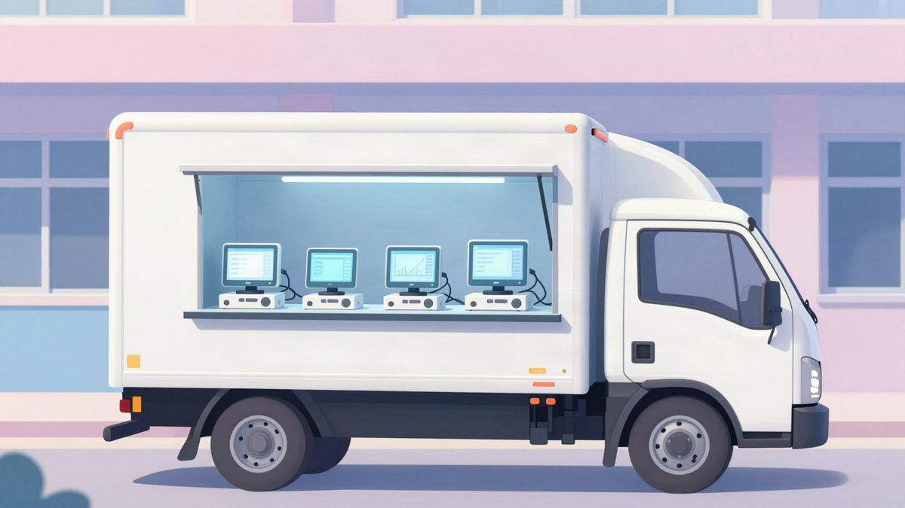
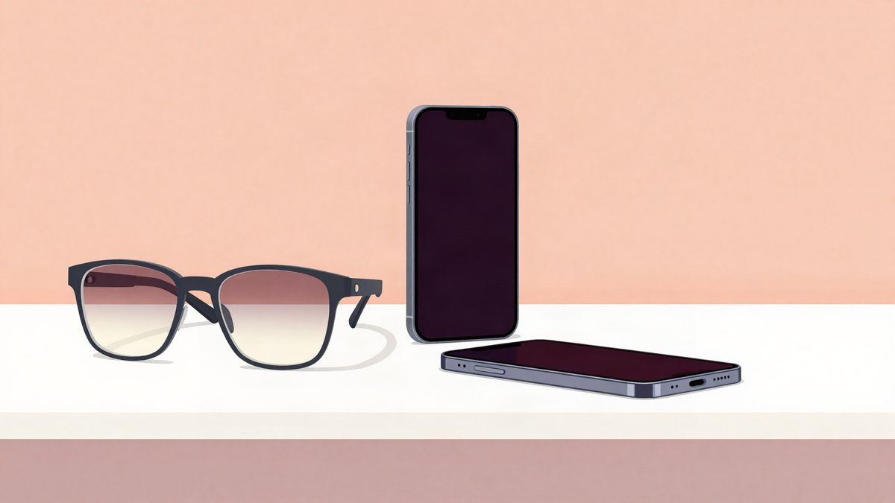
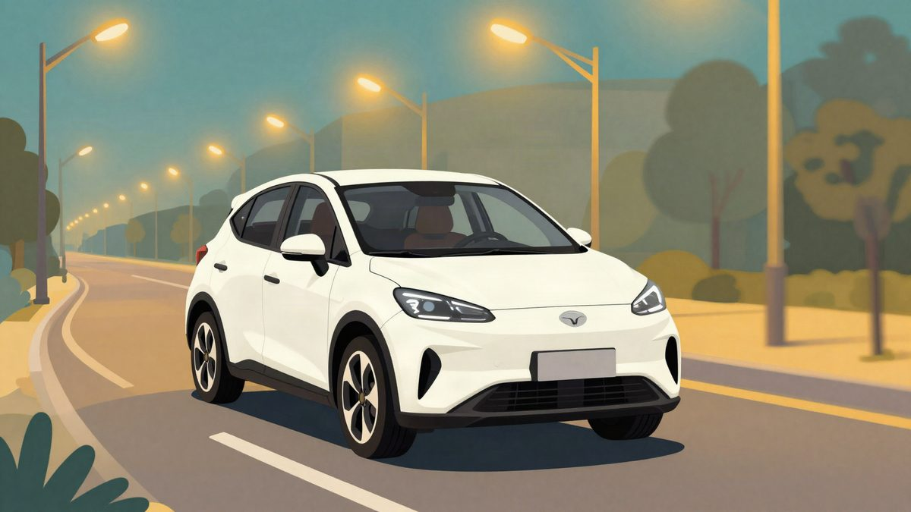

Japanci su ugradili chip laboratorij u kamion: mobileFab s tri uređaja širine 30 cm vozi u škole i tvrtke

Minimal Fab predstavio je mobileFab, kamionski kontejner s tri uređaja za izradu chipova. Putuje u škole i tvrtke bez laboratorija, a polaznici na licu mjesta sami prolaze postupak izrade chipa. Organizacija navodi da bi sustav mogao služiti i za brzo prototipiranje te proizvodnju u malim serijama.
Japanski Minimal Fab, organizacija koja promovira istoimeni sustav za proizvodnju poluvodiča, poslao je na cestu mobileFab, kamionski kontejner s kompletnim minijaturnim laboratorijem za izradu chipova. Kontejner će obilaziti škole i tvrtke, a polaznici će sami proći cijeli proces izrade chipa. Kamion će javnosti biti prikazan u prosincu na sajmu SEMICON Japan 2026.
U svakom kontejneru nalaze se tri uređaja: stroj za nanošenje fotorezista, litografski uređaj bez maske i stroj za razvijanje fotorezista. Svaki je širok samo oko 30 centimetara. Riječ je o opremi iz Minimal Fab laboratorija na pojedinim japanskim sveučilištima, koja je sada prebačena u kamion da je mogu koristiti i ustanove bez vlastitog laboratorija.
Kako izgleda vježba
Polaznici dobivaju wafere promjera 12,5 milimetara koje je unaprijed jetkao japanski Nacionalni institut za napredne industrijske znanosti i tehnologiju (AIST). Zadatak je povezati tranzistore na waferu i proći postupak do gotovog chip corea. Organizacija to uspoređuje s breadboardom na kojem su komponente već zalemljene: polaznik spaja veze i dobiva funkcionalan proizvod.
Zašto ne treba čisti prostor
Da sve stane u kamion, wafer se između uređaja prenosi u zatvorenom obliku, a čistoća se osigurava lokalno, samo na mjestu obrade. Zato nije potrebna velika čista soba, koja je inače nužna u proizvodnji poluvodiča.
Organizacija tvrdi da sustav nije namijenjen samo obrazovanju. Mogao bi poslužiti i za brzo prototipiranje dizajna chipova te za proizvodnju u malim serijama, uz razmjerno mala ulaganja.
Nedostatak stručnjaka
Kao razlog organizacija navodi procjenu da će u idućih deset godina nedostajati inženjera za tvornice poluvodiča. Već sada nema dovoljno nastavnika za to gradivo, pa se sustavna nastava teško organizira. Dodatni problem je podjela posla u tvornicama chipova. Mnogi inženjeri godinama rade samo na jednom ili dva koraka proizvodnje i nikad ne dobiju priliku sami voditi cijeli niz uređaja od početka do kraja.
Izvor: MyDrivers (快科技)
Povezani članci

Xiaomi AI Glasses 2 navodno stižu u prosincu uz Xiaomi 18, uz verziju sa zaslonom27. studenoga 2026. Terra Drone je razvio vlastiti GCS za nadzor više presretačkih dronova i isporučio ga japanskoj agenciji za obrambenu opremu26. studenoga 2026.
Terra Drone je razvio vlastiti GCS za nadzor više presretačkih dronova i isporučio ga japanskoj agenciji za obrambenu opremu26. studenoga 2026.
Xpeng Robotaxi vozi putnike bez vozača: L4 dozvola stigla za 11 mjeseci25. studenoga 2026.